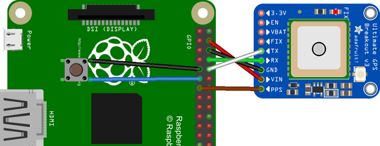

This time server is built on a Raspberry Pi. It includes a GPS reference and a Kismet wifi scanner.

Requirements
This guide starts with a basic Raspbian Lite build, connected to a wired network. Follow the RPi Initial Setup Guide to get started. A Raspberry Pi 2 or 3 may be used.
Parts List
-
Raspberry Pi 2 or 3
-
8GB (or larger) class 10 MicroSD card
-
GPS breakout (Adafruit Ultimate GPS Breakout - 66 channel w/10 Hz updates - Version 3)
-
USB Wifi with monitor mode (TP-Link WN722N WiFi)(see Which Wifi USB)
Connections
Connect wires from the GPS breakout to the pi.
-
VIN to GPIO 5V pin 04
-
GND to GPIO GND pin 06
-
RX to GPIO TXD0 pin 08
-
TX to GPIO RXD0 pin 10
-
PPS to GPIO 27 pin 13 (to output timing PPS, for accurate clock)
Connect a pushbutton to the pi.
-
Pin 1 to GND
-
Pin 2 to GPIO 17 pin 11

Connect a rooftop antenna via the SMA to u.FL adapter.
Connect a monitor mode capable USB wifi with external antenna.
GPS and Time Services
Set up GPS and Time Services as shown in GPS on Raspberry Pi 3.
Kismet
Set up Kismet as shown in Kismet on Raspberry Pi. The optional GISKismet is not needed.
For IDS purposes, the more interesting log files are those which track the alerts. Validating the client MAC addresses attached to your own access points is also worthwhile.
The various Kismet alerts are documented at http://kismetwireless.net/documentation.shtml under Alerts and IDS.
Timeserver Code
The timeserver.py is intended to be launched at startup. It provides an easy to use shutdown button and starts Kismet when the system is ready.
-
sudo apt-get update -
sudo apt-get install git -
mkdir ~/github -
cd ~/github -
git clone https://github.com/gary-dalton/RaspberryPi-projects.git -
cd RaspberryPi-projects/timeserver
#!/bin/python
"""
timeserver.py: main timeserver startup script
Provides a shutdown button and starts Kismet after a GPS fix.
"""
import RPi.GPIO as GPIO
import time, datetime, logging
import gps
# Configure logging
logfilename='/var/log/timeserver.log'
logformat = '%(asctime)s - %(levelname)s - %(message)s'
logging.basicConfig(format=logformat, filename = logfilename, level=logging.DEBUG)
# Use the Board Pin numbers
GPIO.setmode(GPIO.BOARD)
# Pins
BUTTON_SHUTDOWN = 11
# Setup the Pin with Internal pullups enabled and PIN in reading mode.
GPIO.setup(BUTTON_SHUTDOWN, GPIO.IN, pull_up_down=GPIO.PUD_UP)
def shutdown(channel):
"""
Calls system shutdown after a button press of more than 2 seconds
"""
GPIO.remove_event_detect(channel)
pressed_time = datetime.datetime.now()
while not GPIO.input(channel):
time.sleep(.5)
dif = datetime.datetime.now() - pressed_time
pressed_time = dif.seconds
logging.debug('Pressed time = %s', pressed_time)
if pressed_time > 2:
logging.info('Button initiated shutdown')
os.system("sudo reboot -h now")
GPIO.add_event_detect(channel, GPIO.FALLING, callback=shutdown, bouncetime=200)
# Add button pressed event detects
GPIO.add_event_detect(BUTTON_SHUTDOWN, GPIO.FALLING, callback=shutdown, bouncetime=2000)
def main():
"""Timeserver Main"""
# Check for valid GPS fix (mode == 3) before loading kismet
session = gps.gps(mode=gps.WATCH_ENABLE)
report = session.next()
while report['class'] != 'TPV':
report = session.next()
while report.mode != 3:
time.sleep(5)
report = session.next()
# Start Kismet
logging.info('GPS mode 3 fix achieved')
os.system('/usr/local/bin/kismet_server --daemonize')
logging.info('Kismet server started')
# Loop until shutdown
while True:
time.sleep(10)
if __name__ == "__main__":
main()Launch on Boot
Crontab is used to launch the timeserver.py on boot.
-
sudo crontab -e -
Add at end of file
@reboot python /home/pi/github/RaspberryPi-projects/timeserver/timeserver.py &
Check that your script is running:
-
Logfile,
grep 'CRON' /var/log/syslog. The last line show the script being run.
Oct 31 15:26:32 timeserver cron[389]: (CRON) INFO (pidfile fd = 3) Oct 31 15:26:32 timeserver cron[389]: (CRON) INFO (Running @reboot jobs) Oct 31 15:26:32 timeserver CRON[460]: (root) CMD (python /home/pi/github/RaspberryPi-projects/timeserver/timeserver.py &)
-
Process,
ps aux | grep timeserver.py. Show the process running. For this instance, the PID is 462.
root 462 0.0 0.9 21004 8896 ? Sl 15:26 0:00 python /home/pi/github/RaspberryPi-projects/timeserver/timeserver.py
-
Kill process if needed,
sudo kill 462. Replace 462 with your PID.
NTP
Our current NTP configuration does not serve time to clients.